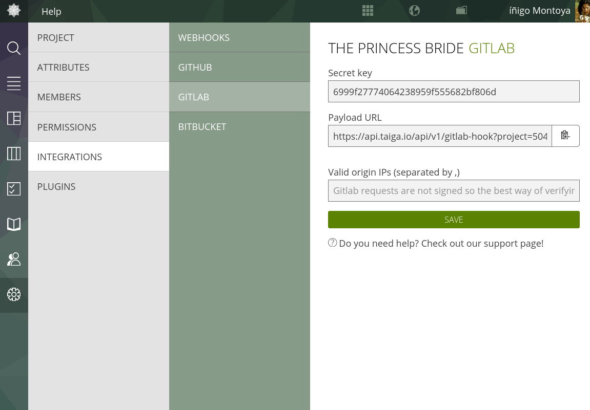

Gitlab Integration
- What can we do currently?
- And what can't we do?
- First: Configure the integration module in Taiga
- Second: Configure Webhooks in your GitLab repository
GitLab is an incredibly powerful open source code collaboration platform, git repository manager, issue tracker and code reviewer. It integrates with issue trackers, continuous integration services and its Enterprise Edition has phenomenal LDAP and Active Directory support.
What can we do currently?
Right now you can connect a GitLab repository with a Taiga project and generate a one-way communication (from GitLab to Taiga) to:
- Change the status of an user story, issue, or task in Taiga with the commit message: you may want to read more about this feature in the article "Changing elements status via commit message".
- Create issues on Taiga when they are created on GitLab*.
- Add comments to the connected issues on Taiga when they are created on GitLab.
In Taiga an issue is connected with a GitLab issue if it was creted by the GitLab integration. In the detail page of an issue on Taiga you can see a link under the subject to the original issue in GitLab.
And what can't we do?
- Dual synchronization: currently the integration functionality only allows receiving messages fromt GitLab. Taiga can't comunicate with GitLab (the one-way communication is from GitLab to Taiga), so changes made in Taiga won't be reflected in GitLab.
- Show commit links in Taiga issues: If you name a story, task or issue in a commit message (by its reference number) a link to commit won't appear in Taiga.
- "Sync current GitLab issues and comment when the integration módule in Taiga is enabled*: the integration only works with the futere issues and comments added in GitLab.
Currently GitLab offers a limitation on its webhooks system that must be considered. It is not hardcore but it's good to know them to be aware of the limitation that exist.
- GitLab doesn't sign the messages so Taiga only can confirm the origin checking the IPs in the request.
Integration will always take time so please be patient. If you need a specific integration and you feel ready to get a machete and get into the Taiga, please review our API Docs and our FAQs about how you can contribute to Taiga.
If you need help in a specific feature, you can always get in touch with the community and contact with us.
First: Configure the integration module in Taiga
- Go to Admin > Integrations > GitLab
- Fill secret key or use the auto generated one
- Copy the payload URL input
- Optionaly you can define the valid emitter IPs or IP ranges to validate the origin of the requests

Second: Configure Webhooks in your GitLab repository
Go to your repository
- Click on Webhooks
- On that screen set the url with the payload url of this screen.
- Taiga currently listens for two different kind of events from GitLab:
- Push events: changing element status via commit message
- Comments: issue comments created in GitLab appear automatically in Taiga
- Issues events: issues created in GitLab appear automatically in Taiga
- Click on "Add Webhook"